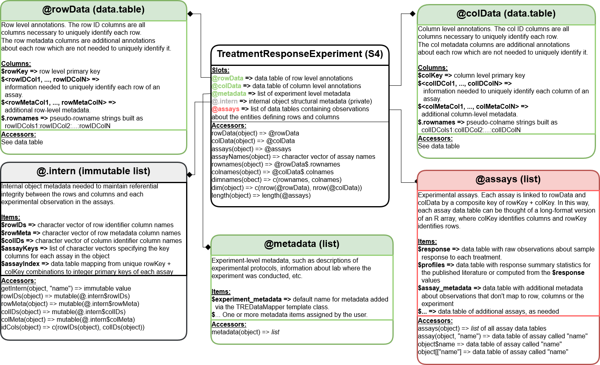
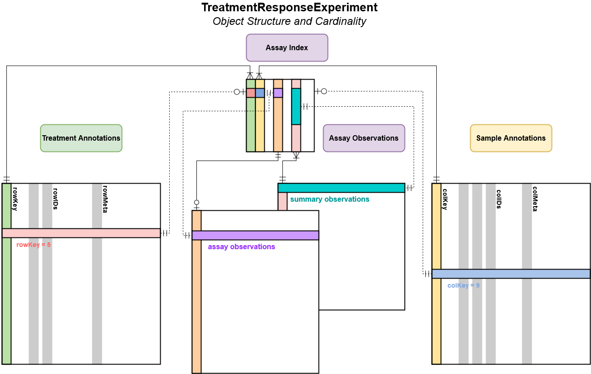

The TreatmentResponseExperiment Class
Petr Smirnov
Princess Margaret Cancer Centre, University Health Network, Toronto Canadapetr.smirnov@uhnresearch.ca
Christopher Eeles
Princess Margaret Cancer Centre, University Health Network, Toronto Canadachristopher.eeles@uhnresearch.ca
TreatmentResponseExperiment.RmdWhy Do We Need A New Class?
The current implementation for the @treatmentResponse
slot in a PharmacoSet has some limitations.
Firstly, it does not natively support dose-response experiments with
multiple drugs and/or cancer cell lines. As a result we have not been
able to include this data into a PharmacoSet thus far.
Secondly, drug combination data has the potential to scale to high dimensionality. As a result we need an object that is highly performant to ensure computations on such data can be completed in a timely manner.
To resolve these issues, we designed and implement the
TreamtentResponseExperiment (or TRE for
short)!
Design Philosophy
The current use case is supporting drug combinations experiments in
PharmacoGx,
but we wanted to create something flexible enough to fit other use
cases. As such, we have used the generic term ‘treatment’ to refer to
any experimental intervention one can conduct on a set of samples. In
context of PharmacoGx,
a treatment represents application of one or more anti-cancer compounds
to a cancer cell-line. The resulting viability for this cell-line after
treatment is the response metric. We hope that the implementation of our
class is general enough to support other use cases. For example, the
TreatmentResponseExperiment class is also being adopted for
radiation dose-response experiments in cancer cell-lines in RadioGx
as well as for investigating compound toxicity in healthy human and rat
cell-lines in ToxicoGx.
Our design takes the aspects of the SummarizedExperiment
and MultiAssayExperiment classes and implements them using
the data.table package, which provides an R API to a rich
set of tools for scalable, high performance data processing implemented
in C.
Anatomy of a TreatmentResponseExperiment
Class Diagram

We have borrowed directly from the SummarizedExperiment
class for the rowData, colData,
metadata and assays slot names. We also
implemented the SummarizedExperiment accessor methods for
the TreatmentResponseExperiment. Therefore the interface
should be familiar to users of common Bioconductor packages.
Object Structure and Cardinality
There are, however, some important differences which make this object more flexible when dealing with high dimensional data.

Unlike a SummarizedExperiment, there are three distinct
subgroups of columns in rowData and
colData.
The first are the rowKey and colKey which
are implemented internally to map between each assay observation and its
associated treatments or samples (rows or columns); these will not be
returned by the accessors by default. The second are the
rowIDs and colIDs, these hold all of the
information necessary to uniquely identify a row or column and are used
to generate the rowKey and colKey. Finally,
there are the rowMeta and colMeta columns,
which store any additional data about treatments or samples not required
to uniquely identify a row in either table.
Within the TreatmentResponseExperiment, an
assayIndex is stored in the @.intern slot
which maps between unique combinations of rowKey and
colKey and the experimental observations in each assay.
This relationship is maintained using a separate primary key for each
assay, which can map to one or more rowKey and
colKey combination. For assays containing raw experimental
observations, generally each assay row will map to one and only one
combination of rowKey and colKey. However, for
metrics computed over experimental observations, It may be desirable to
summarized over some of the rowID and/or colID
columns. In this case, the relationship between the summarized rows and
the metadata stored in the rowData and colData
slots are retained in the assayIndex, allowing
Also worth noting is the cardinality between rowData and
colData for a given assay within the assays list. As
indicated by the lower connection between these tables and an assay, for
each row or column key there may be zero or more rows in the assay
table. Conversely for each row in the assay there may be zero or one key
in colData or rowData. When combined, the
rowKey and colKey for a given row in an assay
become a composite key which uniquely identify an observation.
Constructing a TreatmentResponseExperiment
To deal with the complex kinds of experimental designs which can be
stored in a LongTable, we have engineered a new object to
help document and validate the way data is mapped from raw data files,
as a single large data.frame or data.table, to
the various slots of a TreatmentResponseExperiment
object.
The DataMapper Class
The DataMapper is an abstract class, which means in
cannot be instatiated. Its purpose is to provide a description of the
concept of a DataMapper and define a basic interface for any classes
inheriting from it. A DataMapper is simply a way to map columns from
some raw data file to the slots of an S4 class. It is similar to a
schema in SQL in that it defines the valid parts of an object
(analogously a SQL table), but differs in that no types are specified or
enforced at this time.
This object is not important for general users, but may be useful for
other developers who want to map from some raw data to some
S4 class. In this case, any derived data mapper should
inherit from the DataMapper abstract class. Only one slot
is defined by default, a list or List in the
@rawdata slot. An accessor method,
rawdata(DataMapper), is defined to assign and retrieve the
raw data from your mapper object.
The TREDataMapper Class
The TREDataMapper class is the first concrete sub-class
of a DataMapper. It is the object which defines how to go
from a single data.frame or data.table of raw
experimental data to a properly formatted and valid
TreatmentResponseExperiment object. This is accomplished by
defining various mappings, which let the the user decide which columns
from rawdata should go into which slots of the object. Each
slot mapping is implemented as a list of character vectors specifying
the column names from rawdata to assign to each slot.
Additionally, a helper method has been included,
guessMapping, that will try to determine which columns of a
TreatmentResponseExperiments rawdata should be
assigned to which slots, and therefore which maps.
To get started making a TreatmentResponseExperiment lets
have a look at some rawdata which is a subset of the data from Oneil
et al., 2016. The full set of rawdata is available for
exploration and download from SynergxDB.ca, a free and open
source web-app and database of publicly available drug combination
sensitivity experiments which we created and released (Seo et
al., 2019).
The data was generated as part of the commercial activities of the pharmaceutical company Merck, and is thus named according.
filePath <- system.file('extdata', 'merckLongTable.csv', package='CoreGx',
mustWork=TRUE)
merckDT <- fread(filePath, na.strings=c('NULL'))
colnames(merckDT)## [1] "drug1id" "drug2id" "drug1dose"
## [4] "drug2dose" "combination_name" "cellid"
## [7] "batchid" "viability1" "viability2"
## [10] "viability3" "viability4" "mu/muMax_published"
## [13] "X/X0_published"| drug1id | drug2id | drug1dose | drug2dose | combination_name |
|---|---|---|---|---|
| 5-FU | Bortezomib | 0.35 | 0.00045 | 5-FU & Bortezomib |
| 5-FU | Bortezomib | 0.35 | 0.00200 | 5-FU & Bortezomib |
| 5-FU | Bortezomib | 0.35 | 0.00900 | 5-FU & Bortezomib |
| 5-FU | Bortezomib | 0.35 | 0.04000 | 5-FU & Bortezomib |
| 5-FU | L778123 | 0.35 | 0.32500 | 5-FU & L778123 |
| 5-FU | L778123 | 0.35 | 0.80000 | 5-FU & L778123 |
| combination_name | cellid | batchid | viability1 | viability2 | viability3 | viability4 | mu/muMax_published | X/X0_published |
|---|---|---|---|---|---|---|---|---|
| 5-FU & Bortezomib | A2058 | 1 | 0.814 | 0.754 | 0.765 | 0.849 | 0.880 | 0.847 |
| 5-FU & Bortezomib | A2058 | 1 | 0.792 | 0.788 | 0.840 | 0.852 | 0.897 | 0.867 |
| 5-FU & Bortezomib | A2058 | 1 | 0.696 | 0.831 | 0.690 | 0.806 | 0.854 | 0.817 |
| 5-FU & Bortezomib | A2058 | 1 | 0.637 | 0.678 | 0.625 | 0.627 | 0.767 | 0.724 |
| 5-FU & L778123 | A2058 | 1 | 0.679 | 0.795 | 0.731 | 0.700 | 0.830 | 0.790 |
| 5-FU & L778123 | A2058 | 1 | 0.667 | 0.734 | 0.596 | 0.613 | 0.773 | 0.730 |
We can see that all the data related to the treatment response experiment is contained within this table.
To get an idea of where in a TreatmentResponseExperiment
this data should go, lets come up with some guesses for mappings.
# Our guesses of how we may identify rows, columns and assays
groups <- list(
justDrugs=c('drug1id', 'drug2id'),
drugsAndDoses=c('drug1id', 'drug2id', 'drug1dose', 'drug2dose'),
justCells=c('cellid'),
cellsAndBatches=c('cellid', 'batchid'),
assays1=c('drug1id', 'drug2id', 'cellid'),
assays2=c('drug1id', 'drug2id', 'drug1dose', 'drug2dose', 'cellid', 'batchid')
)
# Decide if we want to subset out mapped columns after each group
subsets <- c(FALSE, TRUE, FALSE, TRUE, FALSE, TRUE)
# First we put our data in the `TRE`
TREdataMapper <- TREDataMapper(rawdata=merckDT)
# Then we can test our hypotheses, subset=FALSE means we don't remove mapped
# columns after each group is mapped
guess <- guessMapping(TREdataMapper, groups=groups, subset=subsets)## [CoreGx::guessMapping,LongTableDataMapper-method]
## Mapping for group justDrugs: drug1id, drug2id## [CoreGx::guessMapping,LongTableDataMapper-method]
## Mapping for group drugsAndDoses: drug1id, drug2id, drug1dose, drug2dose## [CoreGx::guessMapping,LongTableDataMapper-method]
## Mapping for group justCells: cellid## [CoreGx::guessMapping,LongTableDataMapper-method]
## Mapping for group cellsAndBatches: cellid, batchid## [CoreGx::guessMapping,LongTableDataMapper-method]
## Mapping for group assays1: drug1id, drug2id, cellid## [CoreGx::guessMapping,LongTableDataMapper-method]
## Mapping for group assays2: drug1id, drug2id, drug1dose, drug2dose, cellid, batchid
guess## $metadata
## $metadata$id_columns
## [1] NA
##
## $metadata$mapped_columns
## character(0)
##
##
## $justDrugs
## $justDrugs$id_columns
## [1] "drug1id" "drug2id"
##
## $justDrugs$mapped_columns
## [1] "combination_name"
##
##
## $drugsAndDoses
## $drugsAndDoses$id_columns
## [1] "drug1id" "drug2id" "drug1dose" "drug2dose"
##
## $drugsAndDoses$mapped_columns
## [1] "combination_name"
##
##
## $justCells
## $justCells$id_columns
## [1] "cellid"
##
## $justCells$mapped_columns
## character(0)
##
##
## $cellsAndBatches
## $cellsAndBatches$id_columns
## [1] "cellid" "batchid"
##
## $cellsAndBatches$mapped_columns
## character(0)
##
##
## $assays1
## $assays1$id_columns
## [1] "drug1id" "drug2id" "cellid"
##
## $assays1$mapped_columns
## character(0)
##
##
## $assays2
## $assays2$id_columns
## [1] "drug1id" "drug2id" "drug1dose" "drug2dose" "cellid" "batchid"
##
## $assays2$mapped_columns
## [1] "viability1" "viability2" "viability3"
## [4] "viability4" "mu/muMax_published" "X/X0_published"
##
##
## $unmapped
## character(0)Since we want our TreatmentResponseExperiment to have
drugs as rows and samples as columns, we see that both
justDrug and drugsAndDoses yield the same
result. So we do not yet prefer one over the other. Looking at
justCells and cellsAndBatches, we see one
column maps to each of them and therefore still have no preference. For
assay1 however, we see that no columns mapped, while
assay2 maps many of raw data columns.
Since assays will be subset based on the rowKey and
colKey, we know that the rowIDs must be
drugsAndDose and the the colIDs must be
cellsAndBatches. Therefore, to uniquely identify an
observation in any given assay we need all of these columns. We can use
this information to assign maps to our TREDataMapper.
rowDataMap(TREdataMapper) <- guess$drugsAndDose
colDataMap(TREdataMapper) <- guess$cellsAndBatchesLooking at our mapped columns for assay2, we must decide
if we want these to go into more than one assay. If we do, we should
name each item of our assayMap for the
TREDataMapper and specify it in a list of
character vectors, one for each assay. Since viability is
the raw experimental measurement and the final two columns are summaries
of it, we will assign them to two assays:sensitivity and profiles.
assays <- list(
sensitivity=list(
guess$assays2[[1]],
guess$assays2[[2]][seq_len(4)]
),
profiles=list(
guess$assays2[[1]],
guess$assays2[[2]][c(5, 6)]
)
)
assays## $sensitivity
## $sensitivity[[1]]
## [1] "drug1id" "drug2id" "drug1dose" "drug2dose" "cellid" "batchid"
##
## $sensitivity[[2]]
## [1] "viability1" "viability2" "viability3" "viability4"
##
##
## $profiles
## $profiles[[1]]
## [1] "drug1id" "drug2id" "drug1dose" "drug2dose" "cellid" "batchid"
##
## $profiles[[2]]
## [1] "mu/muMax_published" "X/X0_published"
assayMap(TREdataMapper) <- assaysmetaConstruct Method
The metaConstruct method accepts a DataMapper object as
its only argument, and uses the information in that
DataMapper to preprocess all rawdata and map
them to the appropriate slots of an S4 object. In our case,
we are mapping from the merckDT data.table to a
TreatmentResponseExperiment.
At minimum, a TREDataMapper must specify the
rowDataMap, colDataMap, and
assayMap. Additional maps are available, see
?TREDataMapper-class and
?TREDataMapper-accessors for more details.
After configuration, creating the object is very straight forward.
tre <- metaConstruct(TREdataMapper)TreatmentResponseExperiment Object
As mentioned previously, a TreatmentResponseExperiment
has both list and table like behaviours. For table like operations, a
given TreatmentResponseExperiment can be thought of as a
rowKey by colKey rectangular object.
To support data.frame like sub-setting for this object,
the constructor makes pseudo row and column names, which are the ID
columns for each row of rowData or colData
pasted together with a ‘:’. The ordering of these columns is preserved
in the pseudo-dim names, so be sure to arrange them as desirged before
creating the TreatmentResponseExperiment.
Row and Column Names
## [1] "5-FU:Bortezomib:0.35:0.00045" "5-FU:Bortezomib:0.35:0.002"
## [3] "5-FU:Bortezomib:0.35:0.009" "5-FU:Bortezomib:0.35:0.04"
## [5] "5-FU:L778123:0.35:0.325" "5-FU:L778123:0.35:0.8"We see that the rownames for the Merck
TreatmentResponseExperiment are the cell-line name pasted
to the batch id.
## [1] "A2058:1" "A2058:3" "A2780:1" "A2780:2" "A375:1" "A375:2"For the column names, a similar pattern is followed by combining the colID columns in the form ‘drug1:drug2:drug1dose:drug2dose’.
data.frame Subsetting
We can subset a TreatmentResponseExperiment using the
same row and column name syntax as with a data.frame or
matrix.
## <TreatmentResponseExperiment>
## dim: 1 1
## assays(2): sensitivity profiles
## rownames(1): 5-FU:Bortezomib:0.35:0.00045
## rowData(5): drug1id drug2id drug1dose drug2dose combination_name
## colnames(1): A2058:1
## colData(2): cellid batchid
## metadata(0): noneRegex Queries
However, unlike a data.frame or matrix this
subsetting also accepts partial row and column names as well as regex
queries.
head(rowData(tre), 3)## drug1id drug2id drug1dose drug2dose combination_name
## 1: 5-FU Bortezomib 0.35 0.00045 5-FU & Bortezomib
## 2: 5-FU Bortezomib 0.35 0.00200 5-FU & Bortezomib
## 3: 5-FU Bortezomib 0.35 0.00900 5-FU & Bortezomib
head(colData(tre), 3)## cellid batchid
## 1: A2058 1
## 2: A2058 3
## 3: A2780 1For example, if we want to get all instance where ‘5-FU’ is the drug:
tre['5-FU', ]## <TreatmentResponseExperiment>
## dim: 21 5
## assays(2): sensitivity profiles
## rownames(21): 5-FU:Bortezomib:0.35:0.00045 5-FU:Bortezomib:0.35:0.002 ... 5-FU:geldanamycin:0.35:2 MK-4541:5-FU:0.045:10
## rowData(5): drug1id drug2id drug1dose drug2dose combination_name
## colnames(5): A2058:1 A2780:1 A375:1 A427:1 CAOV3:1
## colData(2): cellid batchid
## metadata(0): noneThis has matched all colnames where 5-FU was in either drug1 or drug2. If we only want to match drug1, we have several options:
all.equal(tre['5-FU:*:*:*', ], tre['^5-FU', ])## [1] TRUEAs a technicaly note, ‘*’ is replaced with ‘.*’ internally for regex queries. This was implemented to mimic the linux shell style patten matching that most command-line users are familiar with.
data.table Subsetting
In addition to regex queries, a
TreatmentResponseExperiment object supports arbitrarily
complex subset queries using the data.table API. To access
this API, you will need to use the . function, which allows
you to pass raw R expressions to be evaluated inside the i
and j arguments for dataTable[i, j].
For example if we want to subset to rows where the cell line is VCAP and columns where drug1 is Temozolomide and drug2 is either Lapatinib or Bortezomib:
tre[
# row query
.(drug1id == 'Temozolomide' & drug2id %in% c('Lapatinib', 'Bortezomib')),
.(cellid == 'CAOV3') # column query
]## <TreatmentResponseExperiment>
## dim: 8 1
## assays(2): sensitivity profiles
## rownames(8): Temozolomide:Bortezomib:2.75:0.00045 Temozolomide:Bortezomib:2.75:0.002 ... Temozolomide:Lapatinib:2.75:1.1 Temozolomide:Lapatinib:2.75:5
## rowData(5): drug1id drug2id drug1dose drug2dose combination_name
## colnames(1): CAOV3:1
## colData(2): cellid batchid
## metadata(0): noneWe can also invert matches or subset on other columns in
rowData or colData:
To show that this works as expected:
## [1] "drug2id: ABT-888, BEZ-235, Bortezomib, Dasatinib, Erlotinib, MK-2206, MK-5108, MK-8669, MK-8776, PD325901, SN-38, Sorafenib, geldanamycin"## [1] "batchid: 1"Accessor Methods
rowData
head(rowData(tre), 3)## drug1id drug2id drug1dose drug2dose combination_name
## 1: 5-FU Bortezomib 0.35 0.00045 5-FU & Bortezomib
## 2: 5-FU Bortezomib 0.35 0.00200 5-FU & Bortezomib
## 3: 5-FU Bortezomib 0.35 0.00900 5-FU & Bortezomib
head(rowData(tre, key=TRUE), 3)## drug1id drug2id drug1dose drug2dose combination_name rowKey
## 1: 5-FU Bortezomib 0.35 0.00045 5-FU & Bortezomib 1
## 2: 5-FU Bortezomib 0.35 0.00200 5-FU & Bortezomib 2
## 3: 5-FU Bortezomib 0.35 0.00900 5-FU & Bortezomib 3colData
head(colData(tre), 3)## cellid batchid
## 1: A2058 1
## 2: A2058 3
## 3: A2780 1
head(colData(tre, key=TRUE), 3)## cellid batchid colKey
## 1: A2058 1 1
## 2: A2058 3 2
## 3: A2780 1 3assays
assays <- assays(tre)
assays[[1]]## drug1id drug2id drug1dose drug2dose cellid batchid
## 1: 5-FU Bortezomib 0.3500 0.00045 A2058 1
## 2: 5-FU Bortezomib 0.3500 0.00045 A2780 1
## 3: 5-FU Bortezomib 0.3500 0.00045 A375 1
## 4: 5-FU Bortezomib 0.3500 0.00045 A427 1
## 5: 5-FU Bortezomib 0.3500 0.00045 CAOV3 1
## ---
## 3796: geldanamycin Topotecan 0.0223 0.07750 A2058 1
## 3797: geldanamycin Topotecan 0.0223 0.07750 A2780 1
## 3798: geldanamycin Topotecan 0.0223 0.07750 A375 1
## 3799: geldanamycin Topotecan 0.0223 0.07750 A427 1
## 3800: geldanamycin Topotecan 0.0223 0.07750 CAOV3 1
## combination_name viability1 viability2 viability3 viability4
## 1: 5-FU & Bortezomib 0.814 0.754 0.765 0.849
## 2: 5-FU & Bortezomib 0.214 0.195 0.186 0.223
## 3: 5-FU & Bortezomib 1.064 1.080 1.082 1.009
## 4: 5-FU & Bortezomib 0.675 0.582 0.482 0.516
## 5: 5-FU & Bortezomib 0.845 0.799 0.799 0.759
## ---
## 3796: geldanamycin & Topotecan 0.090 0.043 0.112 0.103
## 3797: geldanamycin & Topotecan 0.025 0.022 0.029 0.023
## 3798: geldanamycin & Topotecan 0.151 0.146 0.144 0.171
## 3799: geldanamycin & Topotecan 0.142 0.166 0.124 0.175
## 3800: geldanamycin & Topotecan 0.091 0.084 0.134 0.119
assays[[2]]## drug1id drug2id drug1dose drug2dose cellid batchid
## 1: 5-FU Bortezomib 0.3500 0.00045 A2058 1
## 2: 5-FU Bortezomib 0.3500 0.00045 A2780 1
## 3: 5-FU Bortezomib 0.3500 0.00045 A375 1
## 4: 5-FU Bortezomib 0.3500 0.00045 A427 1
## 5: 5-FU Bortezomib 0.3500 0.00045 CAOV3 1
## ---
## 3796: geldanamycin Topotecan 0.0223 0.07750 A2058 1
## 3797: geldanamycin Topotecan 0.0223 0.07750 A2780 1
## 3798: geldanamycin Topotecan 0.0223 0.07750 A375 1
## 3799: geldanamycin Topotecan 0.0223 0.07750 A427 1
## 3800: geldanamycin Topotecan 0.0223 0.07750 CAOV3 1
## combination_name mu/muMax_published X/X0_published
## 1: 5-FU & Bortezomib 0.880 0.847
## 2: 5-FU & Bortezomib 0.384 0.426
## 3: 5-FU & Bortezomib 1.033 1.047
## 4: 5-FU & Bortezomib 0.676 0.638
## 5: 5-FU & Bortezomib 0.708 0.667
## ---
## 3796: geldanamycin & Topotecan -0.187 0.193
## 3797: geldanamycin & Topotecan -0.445 0.135
## 3798: geldanamycin & Topotecan 0.090 0.283
## 3799: geldanamycin & Topotecan -0.012 0.246
## 3800: geldanamycin & Topotecan -1.935 0.017
assays <- assays(tre, withDimnames=TRUE)
colnames(assays[[1]])## [1] "drug1id" "drug2id" "drug1dose" "drug2dose"
## [5] "cellid" "batchid" "combination_name" "viability1"
## [9] "viability2" "viability3" "viability4"
assays <- assays(tre, withDimnames=TRUE, metadata=TRUE)
colnames(assays[[2]])## [1] "drug1id" "drug2id" "drug1dose"
## [4] "drug2dose" "cellid" "batchid"
## [7] "combination_name" "mu/muMax_published" "X/X0_published"
assayNames(tre)## [1] "sensitivity" "profiles"Using these names we can access specific assays within a
TreatmentResponseExperiment.
assay
colnames(assay(tre, 'sensitivity'))## [1] "drug1id" "drug2id" "drug1dose" "drug2dose"
## [5] "cellid" "batchid" "combination_name" "viability1"
## [9] "viability2" "viability3" "viability4"
assay(tre, 'sensitivity')## drug1id drug2id drug1dose drug2dose cellid batchid
## 1: 5-FU Bortezomib 0.3500 0.00045 A2058 1
## 2: 5-FU Bortezomib 0.3500 0.00045 A2780 1
## 3: 5-FU Bortezomib 0.3500 0.00045 A375 1
## 4: 5-FU Bortezomib 0.3500 0.00045 A427 1
## 5: 5-FU Bortezomib 0.3500 0.00045 CAOV3 1
## ---
## 3796: geldanamycin Topotecan 0.0223 0.07750 A2058 1
## 3797: geldanamycin Topotecan 0.0223 0.07750 A2780 1
## 3798: geldanamycin Topotecan 0.0223 0.07750 A375 1
## 3799: geldanamycin Topotecan 0.0223 0.07750 A427 1
## 3800: geldanamycin Topotecan 0.0223 0.07750 CAOV3 1
## combination_name viability1 viability2 viability3 viability4
## 1: 5-FU & Bortezomib 0.814 0.754 0.765 0.849
## 2: 5-FU & Bortezomib 0.214 0.195 0.186 0.223
## 3: 5-FU & Bortezomib 1.064 1.080 1.082 1.009
## 4: 5-FU & Bortezomib 0.675 0.582 0.482 0.516
## 5: 5-FU & Bortezomib 0.845 0.799 0.799 0.759
## ---
## 3796: geldanamycin & Topotecan 0.090 0.043 0.112 0.103
## 3797: geldanamycin & Topotecan 0.025 0.022 0.029 0.023
## 3798: geldanamycin & Topotecan 0.151 0.146 0.144 0.171
## 3799: geldanamycin & Topotecan 0.142 0.166 0.124 0.175
## 3800: geldanamycin & Topotecan 0.091 0.084 0.134 0.119
colnames(assay(tre, 'sensitivity', withDimnames=TRUE))## [1] "drug1id" "drug2id" "drug1dose" "drug2dose"
## [5] "cellid" "batchid" "combination_name" "viability1"
## [9] "viability2" "viability3" "viability4"
assay(tre, 'sensitivity', withDimnames=TRUE)## drug1id drug2id drug1dose drug2dose cellid batchid
## 1: 5-FU Bortezomib 0.3500 0.00045 A2058 1
## 2: 5-FU Bortezomib 0.3500 0.00045 A2780 1
## 3: 5-FU Bortezomib 0.3500 0.00045 A375 1
## 4: 5-FU Bortezomib 0.3500 0.00045 A427 1
## 5: 5-FU Bortezomib 0.3500 0.00045 CAOV3 1
## ---
## 3796: geldanamycin Topotecan 0.0223 0.07750 A2058 1
## 3797: geldanamycin Topotecan 0.0223 0.07750 A2780 1
## 3798: geldanamycin Topotecan 0.0223 0.07750 A375 1
## 3799: geldanamycin Topotecan 0.0223 0.07750 A427 1
## 3800: geldanamycin Topotecan 0.0223 0.07750 CAOV3 1
## combination_name viability1 viability2 viability3 viability4
## 1: 5-FU & Bortezomib 0.814 0.754 0.765 0.849
## 2: 5-FU & Bortezomib 0.214 0.195 0.186 0.223
## 3: 5-FU & Bortezomib 1.064 1.080 1.082 1.009
## 4: 5-FU & Bortezomib 0.675 0.582 0.482 0.516
## 5: 5-FU & Bortezomib 0.845 0.799 0.799 0.759
## ---
## 3796: geldanamycin & Topotecan 0.090 0.043 0.112 0.103
## 3797: geldanamycin & Topotecan 0.025 0.022 0.029 0.023
## 3798: geldanamycin & Topotecan 0.151 0.146 0.144 0.171
## 3799: geldanamycin & Topotecan 0.142 0.166 0.124 0.175
## 3800: geldanamycin & Topotecan 0.091 0.084 0.134 0.119References
O’Neil J, Benita Y, Feldman I, Chenard M, Roberts B, Liu Y, Li J, Kral A, Lejnine S, Loboda A, Arthur W, Cristescu R, Haines BB, Winter C, Zhang T, Bloecher A, Shumway SD. An Unbiased Oncology Compound Screen to Identify Novel Combination Strategies. Mol Cancer Ther. 2016 Jun;15(6):1155-62. doi: 10.1158/1535-7163.MCT-15-0843. Epub 2016 Mar 16. PMID: 26983881.
Heewon Seo, Denis Tkachuk, Chantal Ho, Anthony Mammoliti, Aria Rezaie, Seyed Ali Madani Tonekaboni, Benjamin Haibe-Kains, SYNERGxDB: an integrative pharmacogenomic portal to identify synergistic drug combinations for precision oncology, Nucleic Acids Research, Volume 48, Issue W1, 02 July 2020, Pages W494–W501, https://doi.org/10.1093/nar/gkaa421
sessionInfo
## R version 4.2.2 (2022-10-31)
## Platform: x86_64-pc-linux-gnu (64-bit)
## Running under: Ubuntu 22.04.1 LTS
##
## Matrix products: default
## BLAS: /usr/lib/x86_64-linux-gnu/openblas-pthread/libblas.so.3
## LAPACK: /usr/lib/x86_64-linux-gnu/openblas-pthread/libopenblasp-r0.3.20.so
##
## locale:
## [1] LC_CTYPE=C.UTF-8 LC_NUMERIC=C LC_TIME=C.UTF-8
## [4] LC_COLLATE=C.UTF-8 LC_MONETARY=C.UTF-8 LC_MESSAGES=C.UTF-8
## [7] LC_PAPER=C.UTF-8 LC_NAME=C LC_ADDRESS=C
## [10] LC_TELEPHONE=C LC_MEASUREMENT=C.UTF-8 LC_IDENTIFICATION=C
##
## attached base packages:
## [1] stats4 stats graphics grDevices utils datasets methods
## [8] base
##
## other attached packages:
## [1] data.table_1.14.6 CoreGx_2.3.0
## [3] SummarizedExperiment_1.26.1 Biobase_2.56.0
## [5] GenomicRanges_1.48.0 GenomeInfoDb_1.32.4
## [7] IRanges_2.30.1 S4Vectors_0.34.0
## [9] MatrixGenerics_1.8.1 matrixStats_0.63.0
## [11] BiocGenerics_0.42.0 formatR_1.12
## [13] BiocStyle_2.24.0
##
## loaded via a namespace (and not attached):
## [1] lsa_0.73.3 bitops_1.0-7
## [3] fs_1.5.2 rprojroot_2.0.3
## [5] BumpyMatrix_1.4.0 SnowballC_0.7.0
## [7] tools_4.2.2 backports_1.4.1
## [9] bslib_0.4.1 DT_0.26
## [11] utf8_1.2.2 R6_2.5.1
## [13] KernSmooth_2.23-20 colorspace_2.0-3
## [15] gridExtra_2.3 tidyselect_1.2.0
## [17] compiler_4.2.2 textshaping_0.3.6
## [19] cli_3.4.1 shinyjs_2.1.0
## [21] desc_1.4.2 DelayedArray_0.22.0
## [23] bookdown_0.30 slam_0.1-50
## [25] sass_0.4.4 scales_1.2.1
## [27] caTools_1.18.2 bench_1.1.2
## [29] checkmate_2.1.0 relations_0.6-12
## [31] pkgdown_2.0.6 systemfonts_1.0.4
## [33] stringr_1.5.0 digest_0.6.30
## [35] rmarkdown_2.18 XVector_0.36.0
## [37] pkgconfig_2.0.3 htmltools_0.5.3
## [39] highr_0.9 fastmap_1.1.0
## [41] limma_3.52.4 htmlwidgets_1.5.4
## [43] rlang_1.0.6 shiny_1.7.3
## [45] visNetwork_2.1.2 generics_0.1.3
## [47] jquerylib_0.1.4 jsonlite_1.8.3
## [49] BiocParallel_1.30.4 gtools_3.9.4
## [51] dplyr_1.0.10 RCurl_1.98-1.9
## [53] magrittr_2.0.3 GenomeInfoDbData_1.2.8
## [55] Matrix_1.5-1 fansi_1.0.3
## [57] munsell_0.5.0 Rcpp_1.0.9
## [59] lifecycle_1.0.3 piano_2.12.1
## [61] stringi_1.7.8 yaml_2.3.6
## [63] zlibbioc_1.42.0 gplots_3.1.3
## [65] grid_4.2.2 parallel_4.2.2
## [67] promises_1.2.0.1 shinydashboard_0.7.2
## [69] crayon_1.5.2 lattice_0.20-45
## [71] pillar_1.8.1 knitr_1.41
## [73] fgsea_1.22.0 igraph_1.3.5
## [75] codetools_0.2-18 marray_1.74.0
## [77] fastmatch_1.1-3 glue_1.6.2
## [79] evaluate_0.18 BiocManager_1.30.19
## [81] MultiAssayExperiment_1.22.0 vctrs_0.5.1
## [83] httpuv_1.6.6 gtable_0.3.1
## [85] purrr_0.3.5 ggplot2_3.4.0
## [87] cachem_1.0.6 xfun_0.35
## [89] mime_0.12 xtable_1.8-4
## [91] later_1.3.0 ragg_1.2.4
## [93] tibble_3.1.8 memoise_2.0.1
## [95] sets_1.0-21 cluster_2.1.4
## [97] ellipsis_0.3.2